Assignment Revisions and Corrections will be noted here.
IMPORTANT: For this assignment your readme.txt file MUST provide us with a URL to visit to access your application on a live server hosted at a location of your choice (e.g. Openstack). Grading of the assignment will be based on marking the live application. If the marking TA cannot access your application at the URL you provide the assignment mark will be zero.
The purpose of this assignment is to give you practice working within the code of a realistic Express.js application. The app implements a store-front, or garage-sale, website where registered users can buy products. The site uses products stored in a mongodb database and registered users can browse available items and, if desired, buy them from the site. There is not a lot of code to write for this assignment, in fact, it might be more like a tutorial in terms of the code you have to write. What will make this challenging though is navigating the existing code base and figuring out how to actually allow users to buy items with paypal using the paypal-rest-sdk npm module. To do this assignment you will need a personal paypal account and a mongodb database server running on your node server hosting machine.
This assignment will require you to do a lot of investigation. You need to learn the code base, work around issues that it might have and learn how modules work that you might want to use for your solution. (paypal-rest-sdk is the only one you actually need to add but you can investigate others as well.)
You will likely need to stop and start the mongo database a bunch of times, maybe delete all its contents etc. Make a list for yourself of useful mongo commands. Remember you will need to have mongodb up and running to execute the webapp.
Assignment restrictions:
You are now free to use Express.js and whatever other npm modules you find useful. The demo application already contains quite a few npm modules and you should try and figure out what they do and why the author chose them. The only npm module you are required to add is paypal-rest-sdk (or another alternative if you find one).
Note: this, and other assignments, can be done in pairs if you want to work with a partner. Please submit only one copy to culearn with both your names on it.
Marking: This assignment is based on 15 design requirements numbered R1.1...R4.5 for a total of 30 marks.
IMPORTANT: For this assignment your readme.txt file MUST provide us with a URL to visit to access your application on a live server hosted at a location of your choice (e.g. Openstack). Grading of the assignment will be based on marking the live application. If the marking TA cannot access your application at the URL you provide the assignment mark will be zero.
Marks are awarded, or deducted, based on itemized requirements as follows:
| Req Type | Marking |
|---|---|
| R0.x | Assignment gets 0 if any critical submission |
| R0.x | You lose 2 marks for each good practice |
| R0.x | You earn 2 marks for each design requirement (green) satisfied and well implemented; 1 mark if it's partly met or met but not well implemented; and 0 if it's not met. |
The following requirements pertain to all your assignments regardless of what your application is supposed to do (i.e. regardless of the design requirements). These requirements are to ensure that your code is usable, readable, and maintainable.
R0.0 UNIQUENESS REQUIREMENT. The solution and code you submit MUST be unique. That is, it cannot be a copy of, or be too similar to, someone else's code, or other code found elsewhere. You are, however, free to use any code posted on our course website as part of our assignment solution. [Assigment mark =0 if this requirement is not met.]
R0.1 CODE SUBMISSION ORGANIZATION AND COMPILATION:
IMPORTANT: For this assignment your readme.txt file MUST provide us with a URL to visit to access your application on a live server hosted at a location of your choice (e.g. Openstack). Grading of the assignment will be based on marking the live application. If the marking TA cannot access your application at the URL you provide the assignment mark will be zero.
You should submit all the code files and data files necessary to compile and run your app. The TA's will execute your app with node app.js command unless alternative instructions are provided in the README.txt file. If you compress your submission to culearn you must use only .zip format (not .rar or .tar or whatever). Though you are permitted to write code on Windows, Linux, or Mac OS the code should be generic enough to be OS agnostic. Your code must work with at least a current Chrome browser. [Assigment mark =0 if this requirement is not met.]
R0.2 README FILE: Your submission MUST include a README.txt file telling the TA how to setup and run your app. The TA should not have to look into your code to figure out how to start up your app. Your README.txt MUST contain the following:
Your name, student number and email address and if you are working with a partner then their name, student number and email address as well.
Version: node.js version number and OS you tested on your code on.
Install: how to install needed code. This will likely look like npm install or npm install module_name
Launch: FOR THIS ASSIGNMENT YOU NEED TO PROVIDE US WITH A URL WHERE WE CAN ACCESS YOUR APPLICATION ON A LIVE SERVER. If you include your email address the marking TA will issue one warning if they cannot find your server at the URL provided. If you get such a warning you should restart your server right away in hopes the assignment will indeed be marked.
Issues: List any issues that you want the marker to be aware of. In particular, tell us what requirements you did not implement or that you know are not working correctly in the submitted code. Here you are giving us your own assessment of your app.
[Assigment mark =0 if this requirement is not met.]
R0.3 VARIABLE AND FUNCTION NAMES: All of your variables and functions should have meaningful names that reflect their purpose. Don't follow the convention common in math courses where they say things like: "let x be the number of customers and let y be the number of products...". Instead call your variables numberOfCustomers or numberOfProducts. Your program should not have any variables called "x" unless there is a good reason for them to be called "x". (One exception: It's OK to call simple for-loop counters i,j and k etc. when the context is clear and VERY localized.) Remember javascript variables don't have types which can help clarify things so choosing good names is even more important. Many functions in javascript are annonymous (have no name) and so the name of the variable that refers to them is even more important. [Minus 2 marks from assignment if this requirement is not met.]
R0.4 COMMENTS: Comments in your code must coincide with what the code actually does. It is a very common bug to modify code and forget to modify the comments and so you end up with comments that say one thing and code that actually does another. By the way, try not to over-comment your code but instead choose good variable names and function names that make the code more self commenting. Don't be afraid to create local variables so that the variable name provides more clarity. [Minus 2 marks from assignment if this requirement is not met.]
R0.5 CITATION REQUIREMENT: If you use code from other sources you should cite the source in comments that appear with the code. If the source is an internet website then put the URL in the comments. You may use bits of code from outside sources but this may not form the complete solution you are handing in.You DON'T have to cite demo code we provide on the course web site or with tutorials and assignments, however that code should not be used for things you post publicly (like on GitHub). [Minus 2 marks from assignment if this requirement is not met.]
VERY IMPORTANT: Any sample code fragments provided may have bugs (although none are put there intentionally). You must be prepared to find errors in the requirements and sample code. Please report errors so they can be fixed and an assignment revision posted.
The demo code shoppingApplication provided with this assignment is extensive. It has been put together by Cuneyt Celebican one of our current TA's who also took 2406 and 2601 with me recently. He has written this express.js app specifically for the COMP 2406 students to explore, modify, and make use of after the course ends. Thanks Cuneyt!
The application makes use of the following features covered in COMP 2406:
What you need to do first is get the app running and play with it a bit and proceed with the assignment requirements. Then we have to work around known issues (we have only one at this point -see requirements R1.1, R1.2)
It is expected that you will add to the base code to build the missing features and you are free to make whatever modifications you want. Part of the fun will just be figuring out how all the parts of the app work. It is typical of how Express.js apps are organized.
Here are the instructions for running the demo code (You will be doing these on the Openstack server for Tutorial 09):
When you are up and running the initial login page at http://localhost:3000 should look like this:
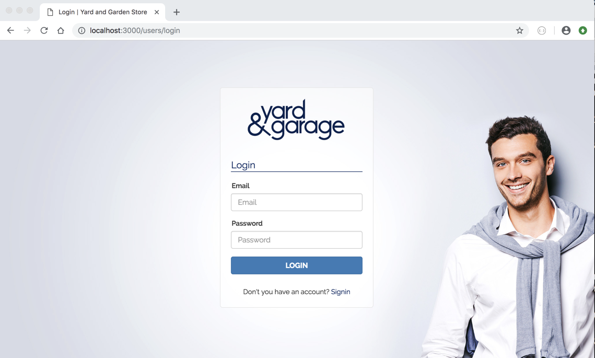
Login with a user account that was added to mongodb as part of the populate script (e.g. admin@admin.com password admin), then the app should look like this:
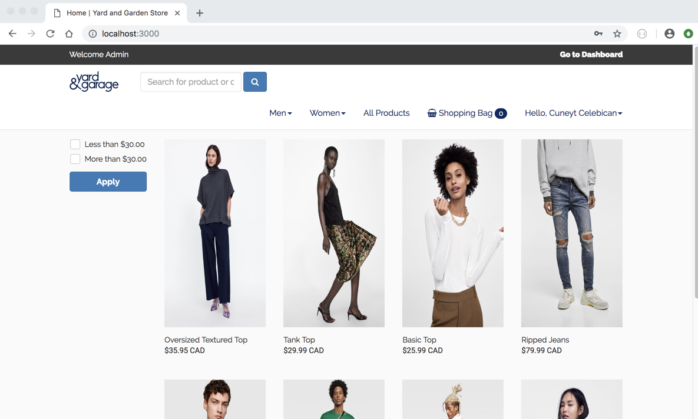
Play around with the app's features. They include among others:
There are many features you could add or modify but what we want you to do for this assignment is the following:
A common development task is to deal with an issue that needs to be fixed in the code. For this assignment you need to at least address the issue of floating point numbers intended to represent money (shopping bag totals) showing too many decimal places. In particular if you add a single item to the shopping bag you will likely see a nicely formated total like this:
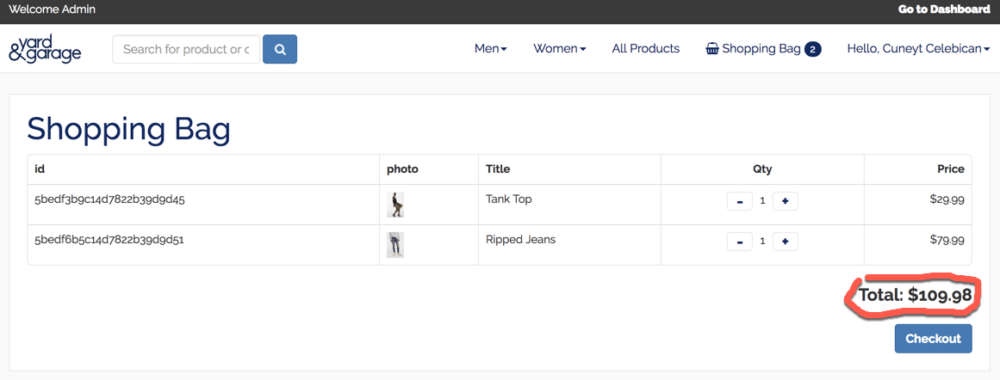
However if multiple items are added or if items are added in quantity and then the quantity reduced the calculated price or totals can appear with too many decimal places which is not appropriate:
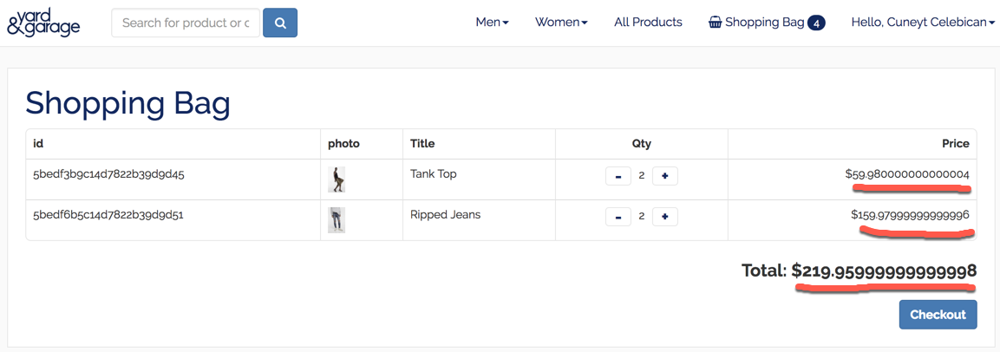
Later we want to actually pay for items with paypal and for that we will need to fix this. You cannot send Paypal an invoice price of $109.979999999999999 -it will reject that and send send back an error in the callback function. So in the next two requirements we want you to at least partly fix this problem. I say partly because ideally you should not represent money with floating point numbers at all but we won't go so far as to replace that -just make sure that results of the calculations are acceptable (have two decimal places).
R1.1 Money values shown to the user in the application should appear with two decimal places. For example the Total or Price displayed in the shopping bag.
R1.2 Money values communicated to the payment service (Paypal) should be communicated with appropriate formatting (two decimal places). Actually Paypal will reject it otherwise so you would not be able to proceed with the next part anyway if you don't fix this.
Look at where the shopping cart calculations are implemented in the server-side code. Find out where price and total values are computed and ensure that the javascript results in only two decimal places in the computed values.
Please point out other known issues as you discover them and we can discuss work-arounds but the above one is the only one you need actually address as part of the assignment.
The main assigment exercise is to complete the application by allowing the user to actually pay for items when they checkout and press the Pay button. When this happens the app should connect to Paypal and allow the user to actually pay for the items using their personal paypal account.
Here is a screen capture video of what we are going after for problems 2 and 3.
To proceed with this you will need a personal Paypal account and we will use the "sandbox" developer feature that Paypal provides so you can test Paypal accounts without risk. (Be careful: if you go live instead you will be working with real accounts and real money -if some of you are brave enough to try this show me.)
You can sign up for a Paypal personal account at https://www.paypal.com/ca/home
The accounts are free and don't require that you link a credit card or bank account at time of creation. (It might ask for one but if you ignore the request it should create the personal account anyway.)
Use your personal paypal account and log into the Paypal developer site: https://developer.paypal.com. There you can create a sandbox account:
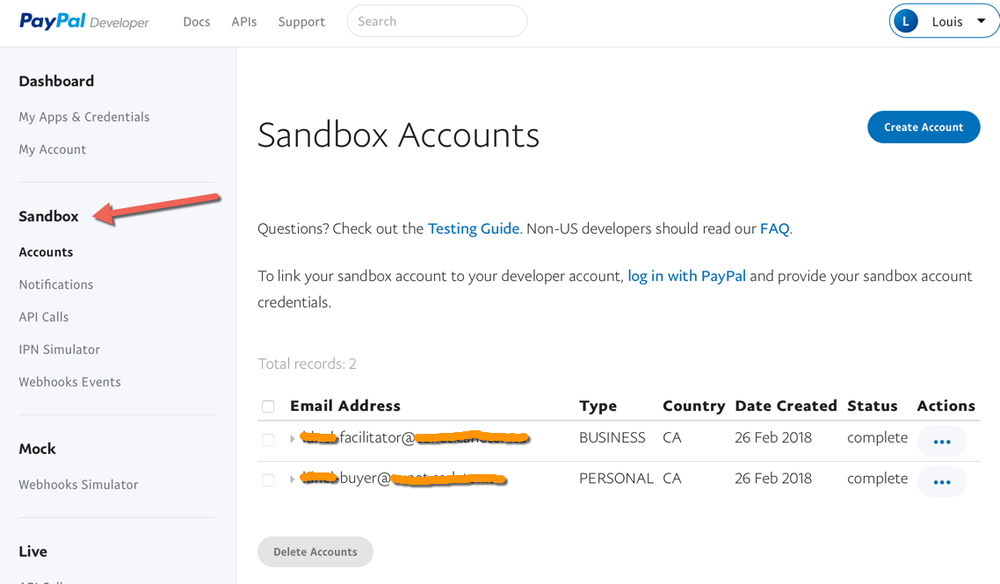
The sandbox account will provide you with two sandbox, or pretend, user accounts: username-buyer@whereever.com and username-facilitator@whereever.com. You would presumably use the buyer account to buy products from the shopping site and you will hard-code the facilitator account into your app to receive the money from buyers.
You need to create an associated app with your sandbox account. Here I've created an app LDNShopping that will access paypal's REST API:
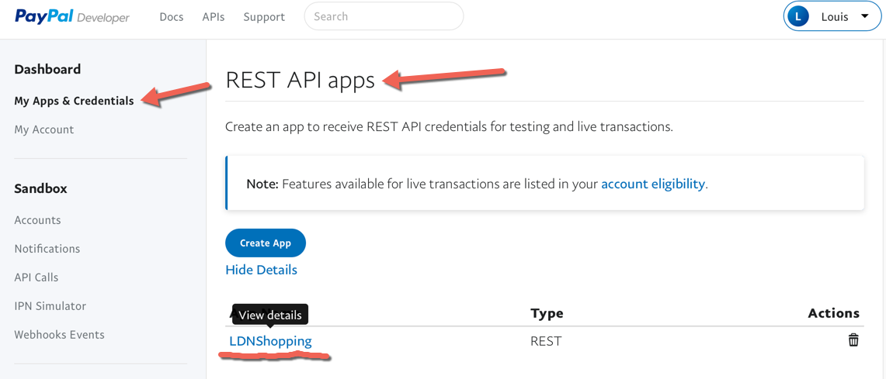
Once your Paypal app is created you need to generate API keys that consist of a client-id and a client-secret. These serve both as API keys and also identify the client which allows you to make that account the target where money from purchases can be deposited. Here is a screen capture of how client-id and secret might appear. The client-id and client-sercret will be hard-coded into your app to receive payments from purchases.
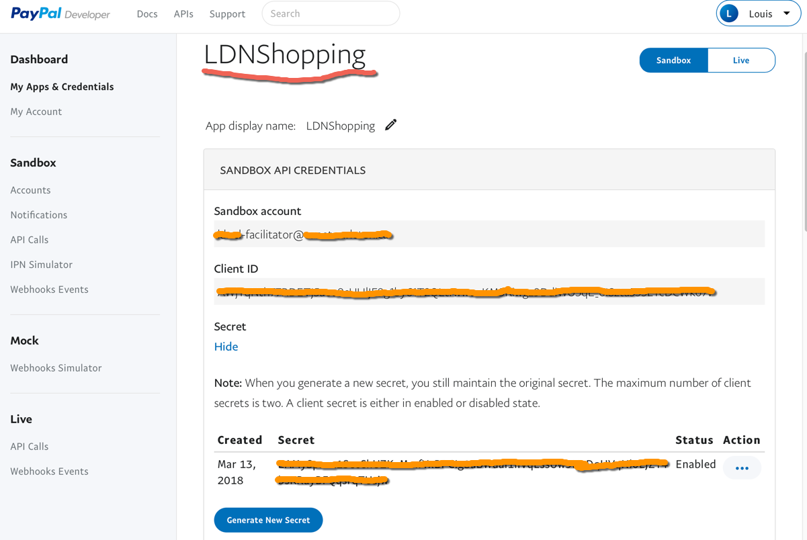
With your Paypal sandbox account created you can now proceed with the assignment's main feature requirements.
Here are the requirements.
R2.1 The application should make use of the paypal-rest-sdk npm module that allows your app to connect with paypal's REST API. You can learn more about it at these links and others that you search for:
https://www.npmjs.com/package/paypal-rest-sdk
http://paypal.github.io/PayPal-node-SDK/
This is a big part of the assignment - learning how this works from the online documentation and then incorporating it into the application.
R2.2 Your application should hard-code the paypal configuration keys so we can run, or use, your app without entering that. It would look something like the following: Here paypal would be the result of executing var paypal = require('paypal-rest-sdk') in app.js file (already there).
//Paypal configuration
paypal.configure({
'mode': 'sandbox', //sandbox or live
'client_id': 'XXXXXXXXXXXXXXXXXXXXXXXXXXXXXXXXXXXXXXXXXXXXXXXXXXXXXXXXXXXXXXXXXXXXXXXXXXXXXXXXXXXX',
'client_secret': 'XXXXXXXXXXXXXXXXXXXXXXXXXXXXXXXXXXXXXXXXXXXXXXXXXXXXXXXXXXXXXXXXXXXXXXXXXXXXXXXXXXXXXXX'
});
You will use the client_id and client_secret from your paypal developer sandbox account as described above. Again make sure you hard-code this so we can run your server otherwise we will not be able to test any of your requirements. The client_id used above represents the paypal (sandbox) account where money will be deposited when users buy products using their own paypal account. That is, this app hard-codes the app id of the account where money will be deposited but buyers will enter their own paying account details as part of the paypal checkout procedure. That way, if the marking TA buys an item from your webapp a record of that will show up in your facilitator paypal account (in effect, paying you with money rather than marks -this could be the future of how assignments get graded).
When a user has added an item to their shopping bag and they click on the shopping bag they are taken to a page that looks like this:
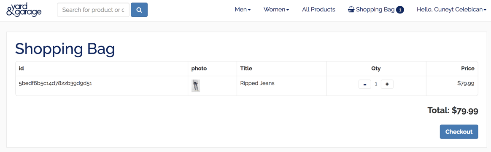
Upon clicking the Checkout button the user is taken to a page which includes a Pay button:
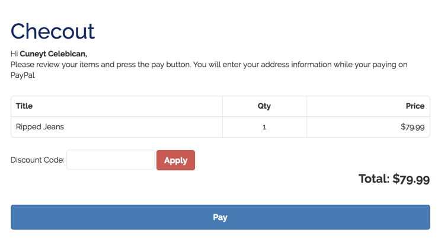
Currently, in the demo code, when you click the Pay button you will randomly either be directed to a success or cancelled page (find out where this happens in the code):
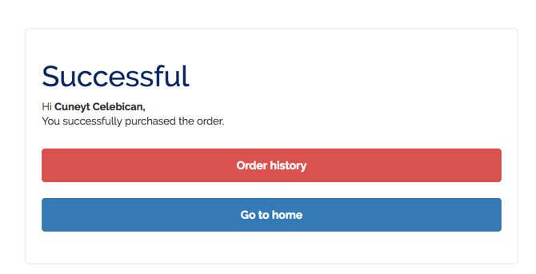
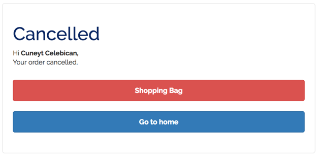
Here is the behaviour you need to implement:
R3.1 When the client presses the Pay button on the checkout page the application should connect to Paypal. A buyer's account may or may not already be provided (that is up to you). The user should see the paypal page:
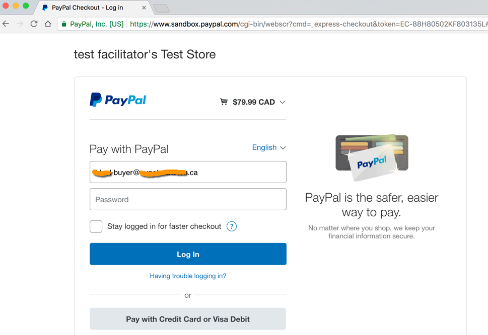
The above behaviour, for example, might be the result of the website making a GET or POST request to the server to a /checkout/checkout-progress route or whatever you decide to use.
R3.2 When the client logs into Paypal as the result of the above screen they should see the Continue screen from Paypal as shown below (There is nothing you likely need to do to have this happen because the user is now seeing Paypal pages.)
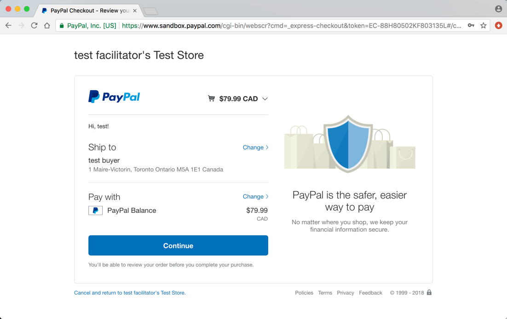
R3.3 When the client makes a payment they should be taken to a screen in your app that might look like the following:
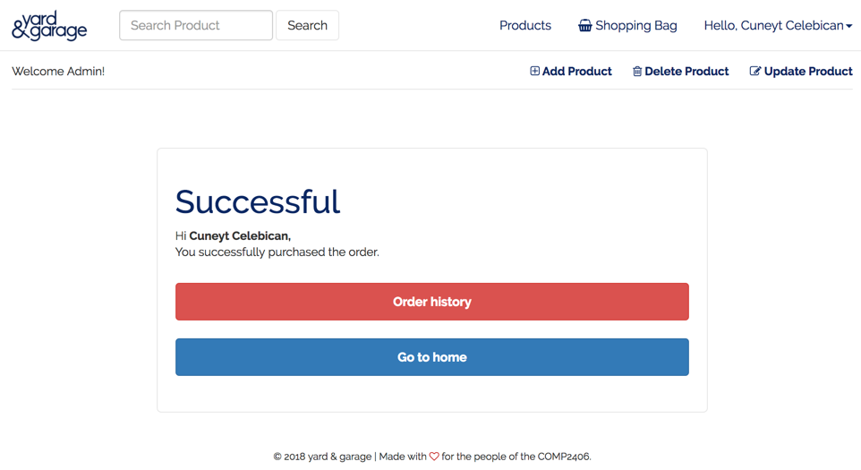
The page should provide them with an Order History option and a Go to Home option. If the Order History option is selected they should see the order history which includes that purchase and any others they made since the server was started:
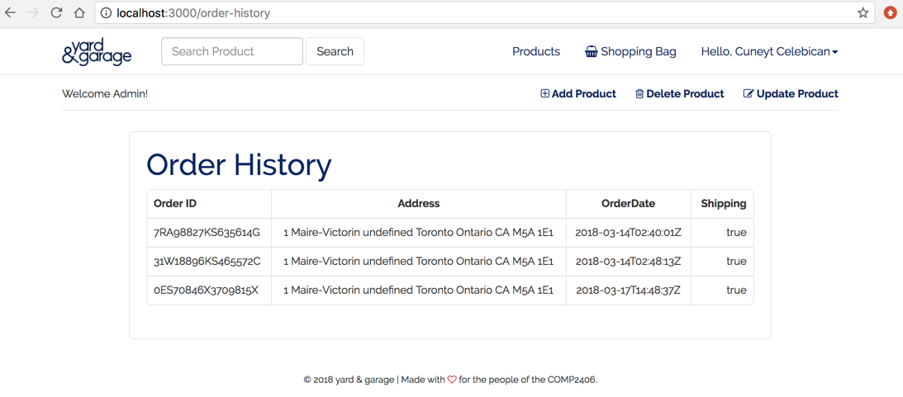
The Order History page is actually already coded in the demo code however it will likely be empty because no order data is being put in the mongodb database yet. To get this to work you need to add order data as part of the checkout process (see the the next requirement). Note you will also be able to see the orders in your paypal facilitator sandbox account (though the marker can't because that is in your account):
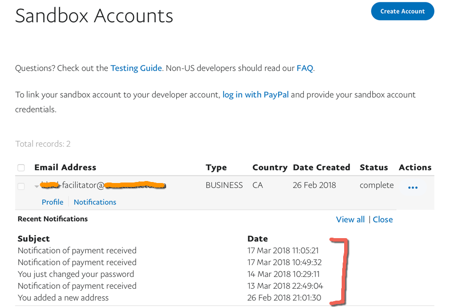
R3.4 As a result of a successful purchase the server should add information about that order to the mongodb database. For example, the screen above is based on a document added to mongo with the following code:
var newOrder = new Order({
orderID : paymentInformation.id,
username : req.user.username,
address : userAddress,
orderDate : payment.create_time,
shipping : true
});
newOrder.save();
These are the orders that would be shown as a result of clicking the Order History button.
R3.5 When the client makes a purchase the shopping bag should be cleared (items removed). It is up to you whether you clear it as well if they cancel a payment -typically they would not be removed.
R3.6 If the user chooses to cancel the payment on the paypal screen they should be taken to a "payment cancelled" screen in your app. It is up to you whether you leave current items in the shopping bag.
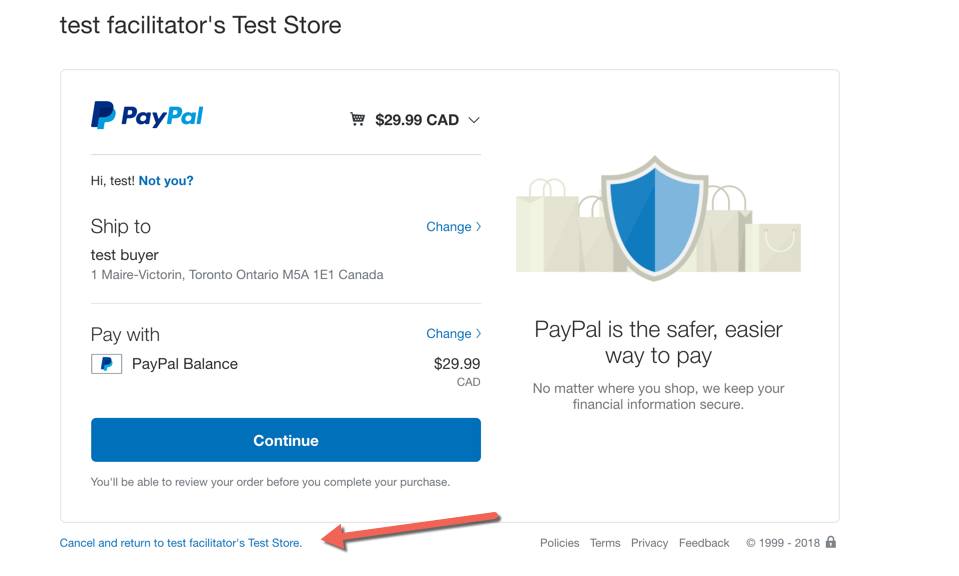
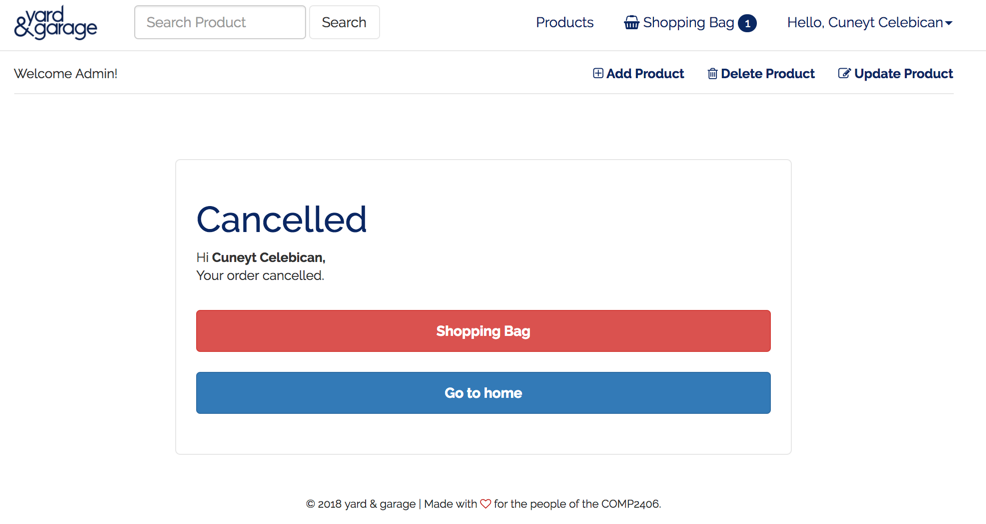
Now that you have the application working we want you to make this a site for your business. We want you to modify the database and the application logo to be a business of your choice subject to the following requirements.
R4.1 Decide what your store is going to sell and what products you want to offer. Replace the "Yard & Garage" logo with one that reflects your business. (Make whatever other styling changes you want.)
R4.2 Replace the populate-for-startup.js file or change its contents in the seed directory to populate the mongodb database with your products instead. (use the mongo client to drop the old database first -reivew tutorial 08 if necessary.) Provide at least 10 products. You are free to, and encouraged to, change the properties (mongoose schema) of the products. Also add a user, or two, to the database including yourself (include the userid/password in your readme.txt file for the marker). Be mindful of the next requirement.
R4.3 The package.json file that you submit with your files must include any additional npm modules you might have used.
R4.4 We should be able to run your server by executing npm start and then visit your website at http://localhost:3000 with a browser. (But be aware we will be marking your app based on the URL you provide for a live server.
R4.5 Your business site should support all the features implemented in parts 1,2 and 3.
IMPORTANT: Your readme.txt file MUST provide us with a URL to visit to access your application on a live server hosted at a location of your choice. Grading of the assignment will be based on marking the live application. If the marking TA cannot access your application at the URL you provide the assignment mark will be zero.
If you complete these requirements you will have a pretty much working storefront ready for the big time.